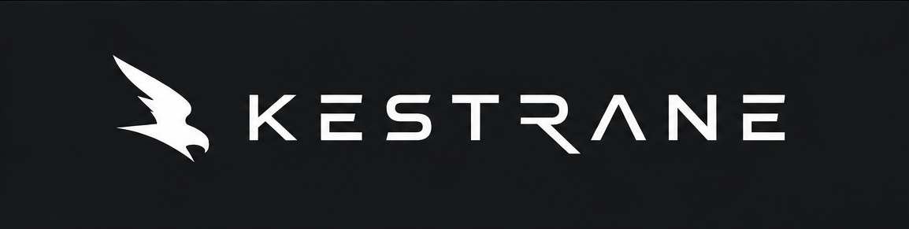

Software · AI · Intelligent Systems
Building intelligent technology for the real world.
Kestrane is a software and AI company building intelligent systems, applications, and tools that solve complex real-world problems.
What we build
Artificial Intelligence
Machine learning, AI assistants, intelligent agents, and model integration.
Software Engineering
Web, desktop, mobile and cloud applications built for scale and resilience.
Intelligent Systems
Systems that seamlessly combine software, data, automation and AI.
Engineering Technology
Software optimized for industrial, technical and engineering workflows.
Engineered solutions
Kestrane Analytics
AI-powered analytics architecture.
Kestrane Maintain
Intelligent system maintenance and diagnostic workflows.
MI-Recover
Advanced file recovery and data integrity toolkit.
DMJ LABS
Research · Models · R&D
KESTRANE
Software · AI · Products
THE REAL WORLD
Users · Engineers · Businesses
DMJ Labs explores emerging technologies and conducts research. Kestrane turns promising technology into practical software and intelligent products.
We don't build technology for the sake of technology. We build it to make difficult things possible.
Build
Turn ideas into working systems.
Intelligence
Use AI where it genuinely adds value.
Engineering
Make systems reliable, practical and scalable.
- 01AI Systems
- 02Industrial Intelligence
- 03Developer Tools
- 04More coming...
Explore what we're building.
GitHub →
Have an idea worth building?
hello@kestrane.com
Get in touch →